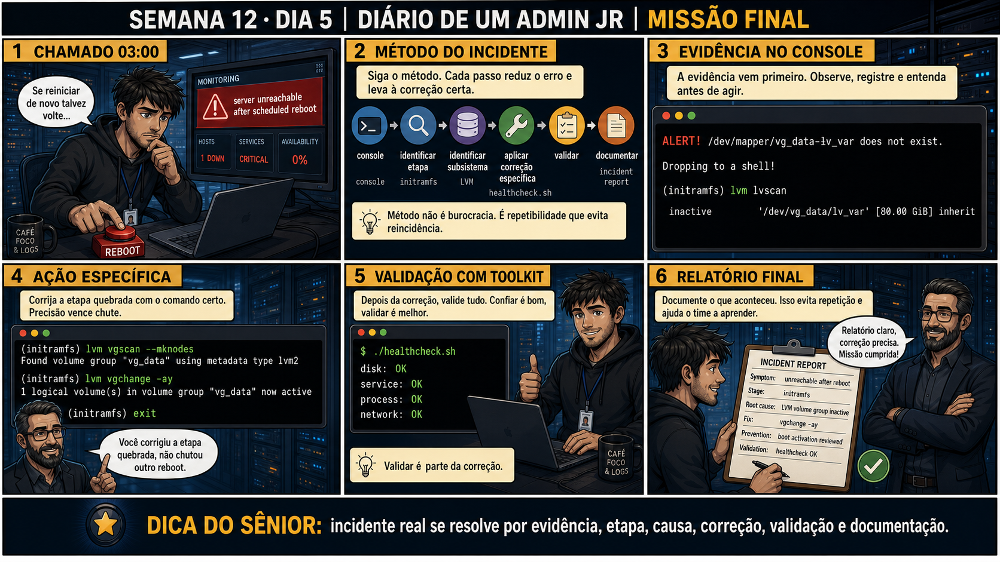

ls foi o primeiro passo — o Júnior mal sabia diferenciar
um arquivo de um diretório. Hoje, às 3 da manhã, um alerta real cai na tela: servidor inacessível depois
de um reboot agendado. O reflexo antigo seria "reiniciar de novo e torcer". Mas doze semanas de prática
deixaram outra coisa no lugar do reflexo: console primeiro (a rede pode ser parte do problema), ler a
mensagem inteira antes de reagir, identificar a etapa exata da cadeia, identificar o subsistema exato
envolvido, aplicar a correção que aquela causa específica pede — nunca uma ação genérica — e só então
validar e documentar. Não é mais uma lista de passos decorados. É como o Júnior pensa agora, sem
precisar parar pra lembrar a ordem. O ponto que fica, o mais importante de toda a Fase 1: o método não é
burocracia que atrasa a resolução — é o que transforma pânico às 3 da manhã em trabalho tranquilo, porque
você já sabe exatamente o próximo passo, sempre.
Semana 12 · Dia 5 | Missão Final da Fase 1
Missão Final da Fase 1
incidente real se resolve por evidência, etapa, causa, correção, validação e documentação
ANTES DE ALTERAR, OBSERVE. DEPOIS DE ALTERAR, VALIDE.
1. O chamado
#7599
PRIORIDADE CRÍTICA
03:00
aberto por: monitoramento
host: srv-final-01 · serviço: disponibilidade — 0%
"server unreachable after scheduled reboot. 1 host down, serviço crítico, disponibilidade 0%."
12 semanas de treino te ensinaram exatamente a resistir ao reflexo de "reiniciar de novo". O que você faz primeiro?
💡 Passa o mouse nas palavras destacadas pra ver uma dica rápida — clica se quiser a explicação completa com analogia.
2. O sênior te conta
Doze semanas atrás, o primeiro ticket
No Dia 1 desta jornada, um comando
3. Decodificador de conceitos
Clica em qualquer termo pra ver a definição completa e uma analogia do dia a dia:
4. Ferramentas e leitura da evidência
| Etapa do método | Ferramenta usada hoje |
|---|---|
| Console | Acesso ao console local do servidor (não SSH, já que a rede pode estar fora nesse ponto). |
| Identificar etapa | Leitura da mensagem de erro completa — aqui, initramfs. |
| Identificar subsistema | lvm lvscan — confirma volume group inativo (LVM). |
| Aplicar correção específica | lvm vgscan --mknodes + lvm vgchange -ay — ativa o volume. |
| Validar | ./healthcheck.sh — confirma disco, serviço, processo e rede OK. |
| Documentar | Relatório de incidente: sintoma, etapa, causa raiz, correção, prevenção, validação. |
ALERT! /dev/mapper/vg_data-lv_var does not exist. Dropping to a shell! (initramfs) lvm lvscan inactive '/dev/vg_data/lv_var' [80.00 GiB] inherit (initramfs) lvm vgscan --mknodes Found volume group "vg_data" using metadata type lvm2 (initramfs) lvm vgchange -ay 1 logical volume(s) in volume group "vg_data" now active (initramfs) exit $ ./healthcheck.sh disk: OK service: OK process: OK network: OK
5. Laboratório guiado — a Missão Final completa
⚠️ Este laboratório precisa de uma segunda máquina/VM real (ou de hardware/reboot que um terminal online não reproduz) — pratique no seu ambiente virtual. Não está disponível no terminal Killercoda.
Segurança: execute os testes apenas em VM descartável e confirme nomes de discos, hosts e arquivos antes de cada comando.
- Ação: simule (em VM de laboratório) um cenário de volume group inativo causando falha de boot, reproduzindo o alerta "server unreachable after scheduled reboot".ALERT! /dev/mapper/vg_data-lv_var does not exist. Dropping to a shell! (initramfs) _
🔍 Detalhar essa mensagem
- ALERT! /dev/mapper/vg_data-lv_var does not exist.
- Nomeia o dispositivo mapeado exato que o initramfs esperava montar e não encontrou — aqui, um volume LVM diferente do caso da Semana 11 (vg_data em vez de vg_root).
- Dropping to a shell!
- O initramfs abre uma shell mínima de emergência com as ferramentas (lvm incluído) necessárias para investigar e corrigir, sem precisar de mídia externa.
Resultado esperado: boot trava em initramfs, com a mensagem de volume não encontrado.Por quê: reproduzir o cenário controlado antes do incidente real é o que transforma teoria das 12 semanas em reflexo pronto pra usar sob pressão. - Ação: aplique o método completo: console, identificar etapa, identificar subsistema, sem pular nenhuma etapa.(initramfs) lvm lvscan inactive '/dev/vg_data/lv_var' [80.00 GiB] inherit
🔍 Detalhar esse comando
- lvm lvscan
- Varre e lista os volumes lógicos (LVs) conhecidos pelo LVM, junto com seu estado atual.
- inactive
- O volume existe e tem os dados intactos — só não está ATIVADO neste boot. Não é o mesmo que 'ausente' ou 'corrompido', é só destravar que falta.
Resultado esperado: etapa (initramfs) e subsistema (LVM) documentados antes de qualquer correção.Cilada comum: sob pressão de um alerta às 3 da manhã, pular direto pra "vou tentar alguma coisa" — o método existe justamente pra funcionar quando a pressa aperta mais. - Ação: aplique a correção específica (lvm vgscan --mknodes + lvm vgchange -ay) e saia do shell de emergência.(initramfs) lvm vgscan --mknodes Found volume group "vg_data" using metadata type lvm2 (initramfs) lvm vgchange -ay 1 logical volume(s) in volume group "vg_data" now active (initramfs) exit
🔍 Detalhar esses comandos
- lvm vgscan
- Varre os discos em busca de volume groups e os registra no sistema.
- --mknodes
- Além de varrer, recria os arquivos de dispositivo (nodes) em /dev/mapper para os volumes encontrados — útil quando o volume existe mas os nodes correspondentes ainda não foram criados nesse boot.
- lvm vgchange -ay
- Ativa (-a) todos os volumes lógicos do volume group encontrado, com 'y' confirmando a ativação — sem isso, o volume group pode aparecer no vgscan mas continuar inacessível para montagem.
Resultado esperado: boot prossegue normalmente após a correção.🧑🏫 Aqui entra o Mentor (em breve): se o boot ainda falhar após a correção do LVM, este é o ponto onde o chat com o Sênior-IA vai ajudar a investigar uma segunda causa em camada — igual ao método usado nas semanas de rede mais adiante. - Ação: escreva ou adapte um healthcheck.sh simples que verifique disco, serviço, processo e rede, e rode-o.$ ./healthcheck.sh disk: OK service: OK process: OK network: OK
🔍 Detalhar esse comando
- ./healthcheck.sh
- Executa um script local de validação — o './' indica que o script está no diretório atual, não em um caminho do PATH do sistema.
- disk / service / process / network: OK
- As quatro checagens do método de validação completa: cada uma precisa retornar OK antes do incidente ser considerado encerrado.
Resultado esperado: disk OK, service OK, process OK, network OK.Se o seu resultado foi diferente
"./healthcheck.sh: No such file or directory" → esse é um script de exemplo — crie um mínimo pra reproduzir a validação final:printf '#!/bin/bash\necho "disk: OK"\necho "service: OK"\n' > healthcheck.sh && chmod +x healthcheck.sh. - Ação: escreva o relatório final: sintoma, etapa, causa raiz, correção, prevenção, validação — reproduzindo o painel 6 da prancha de hoje.Resultado esperado: relatório de incidente completo, pronto para ser entregue a um sênior.
6. Antes de ver as opções — tenta responder
🧠 Recall ativo: quais são as seis etapas do método de incidente que você usou a Fase 1 inteira pra
construir, uma peça por semana?
Console →
identificar etapa
→ identificar subsistema →
aplicar correção específica
→ validar → documentar. Não é burocracia — é repetibilidade que evita reincidência. Cada palavra dessa
cadeia foi uma semana de treino: Semana 11 (etapas do boot), Semana 12 (correção específica por causa).
7. Questão comentada — clica numa alternativa
O servidor caiu em modo initramfs com "ALERT! /dev/mapper/vg_data-lv_var does not
exist. Dropping to a shell!". Seguindo o método, qual é o primeiro passo depois de ler a mensagem?
💡 Analogia do Sênior para Fixar: A missão final de troubleshooting integrado é o voo solo do piloto: combina diagnóstico de CPU, memória, storage LVM, logs e segurança para restaurar o serviço em crise.
7.1 lvm vgchange -ay ativou o volume, e você digitou exit para sair do shell initramfs
O boot prossegue normalmente. Um colega já quer fechar o chamado como resolvido.
Por que rodar ./healthcheck.sh antes de fechar o chamado é uma etapa necessária,
não opcional?
💡 Analogia do Sênior para Fixar: Isolar a causa raiz antes de tentar qualquer reinicialização é a marca que separa o administrador júnior amador do profissional de infraestrutura corporativa.
7.2 "Documentar o incidente depois de tudo resolvido é perda de tempo, já que o problema já acabou?"
O painel 6 da prancha de hoje mostra o relatório final sendo entregue e aprovado — não é o fim informal da história, é uma etapa formal do método.
Por que documentar continua sendo necessário mesmo com o servidor já funcionando
de novo?
💡 Analogia do Sênior para Fixar: Entregar o relatório do incidente com evidências técnicas irrefutáveis e recomendações preventivas conclui a formação da Fase 1 com excelência profissional.
8. Procedimento profissional
- Console primeiro — nunca assuma que a rede vai estar disponível num incidente de boot.
- Identifique a etapa exata da cadeia de boot onde o sistema travou.
- Identifique o subsistema específico envolvido (LVM, fstab, GRUB, kernel — cada um com sua ferramenta).
- Aplique a correção específica pra aquela causa — nunca um reboot genérico como primeira tentativa.
- Valide com uma ferramenta que cubra o sistema inteiro, não só o ponto corrigido, e documente tudo.
Prevenção
Leve o método das 6 etapas (console → etapa → subsistema → correção específica → validar
→ documentar) pra fora da sala de aula: use-o como checklist mental em QUALQUER incidente futuro, não só de
boot. É a mesma disciplina que vai aparecer de novo, adaptada, em cada fase seguinte do curso — redes,
especializações, e no trabalho real como sistemista.
9. Validação e encerramento
- O método completo foi seguido, sem pular etapa: console, etapa, subsistema, correção, validação, documentação.
- A correção aplicada foi específica para a causa identificada, não um reboot genérico.
- healthcheck.sh (ou equivalente) validou o sistema inteiro, não só o ponto corrigido.
- Um relatório de incidente completo foi escrito, cobrindo sintoma até prevenção.
Rollback e limites
lvm vgchange -ay é a ativação correta de um volume já existente — não é
destrutivo. O cuidado real de toda a Fase 1 se resume nisto: correção precisa vence chute, sempre. Se a
causa não estiver clara, continue investigando antes de agir — reiniciar de novo nunca é a primeira opção.
💡 Sobre repetição espaçada: hoje não é um conceito novo — é a integração de
12 semanas inteiras num único fluxo. O Anki vai reforçar o método completo como uma unidade só, não como
peças soltas.
10. Resposta final
Alternativa correta: A. Nesta aula, o primeiro passo certo foi
identificar etapa (initramfs) e subsistema (LVM) com lvm lvscan, antes de qualquer correção. O ponto
central do caso é este: incidente real se resolve por evidência, etapa, causa, correção, validação e
documentação.
🏆 FASE 1 CONCLUÍDA
12 semanas, 60 aulas, do primeiro ls
até resolver um incidente de boot sozinho, do início ao fim. Processos, permissões, texto, bash, automação e
recuperação de sistema — a base inteira de um sistemista júnior de Linux está construída.
🔓 O que você desbloqueou hoje — e nas últimas 12 semanas
Capacidade de resolver um incidente completo de boot, sozinho, usando o método
profissional inteiro. Isso fecha a Fase 1 — Linux Puro. A Fase 2 começa na Semana 13 com Redes: TCP/IP,
DNS, DHCP, firewall, SSH, VPN e mais, sempre com a mesma disciplina construída aqui — observar antes de
alterar, validar depois de alterar, e nunca corrigir no escuro.